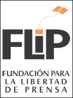
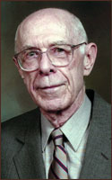

2012
 Umar Cheema, investigative reporter, Pakistan
Umar Cheema, investigative reporter, Pakistan
 Jodi Cobb, photographer and author
Jodi Cobb, photographer and author
 Mona Eltahawy, columnist and cyber-activist
Mona Eltahawy, columnist and cyber-activist
 John Ferrugia, investigative journalist, KMGH-TV
John Ferrugia, investigative journalist, KMGH-TV
 Jeff Leen, Washington Post Investigative Unit
Jeff Leen, Washington Post Investigative Unit
 Adam Moss, Editor-in-Chief, New York Magazine
Adam Moss, Editor-in-Chief, New York Magazine
 NYT Graphics Dept., The New York Times
NYT Graphics Dept., The New York Times
 Fred Papert, advertising executive
Fred Papert, advertising executive
 Ken Paulson, President/CEO, First Amendment Center
Ken Paulson, President/CEO, First Amendment Center
>>>>>>> origin/master
2011
Margaret Wolf Freivogel Founding Editor, St. Louis Beacon

FRONTLINE Investigative Documentary Series

Mario R. Garcia CEO and Founder, Garcia Media

David Granger Editor-in-Chief, Esquire Magazine

Robert S. Leaf Chairman, Robert S. Leaf Consultants

Danny Lyon Photographer, Filmmaker and Writer

Mark Russell Editor, The Orlando Sentinel

Süddeutsche Zeitung Largest Daily Newspaper in Germany
<<<<<<< HEAD

=======
2011
 Margaret Wolf Freivogel, founding editor, St. Louis Beacon
Margaret Wolf Freivogel, founding editor, St. Louis Beacon
FRONTLINE, investigative documentary series
Mario R. Garcia, CEO and founder, Garcia Media
David Granger, Editor-in-Chief, Esquire Magazine
Robert S. Leaf, Chairman, Robert S. Leaf Consultants
Danny Lyon, photographer, filmmaker and writer
Mark Russell, editor, The Orlando Sentinel
Süddeutsche Zeitung, largest daily newspaper in Germany
>>>>>>> origin/master
2010
James Balog Founder, Extreme Ice Survey

Cathleen Black Media Executive

The Foundation for the Freedom of the Press (FLiP) Bogotá, Colombia

Dorothy J. Gaiter Wine Columnist, Author

Myron Kandel Financial Journalist

Larry Postaer Co-Chairman, Rubin Postaer & Associates

Sandy Rowe Editor

ZETA Weekly Newspaper Tijuana
<<<<<<< HEAD

=======
2010
James Balog, founder, Extreme Ice Survey
Cathleen Black, media executive
 The Foundation for the Freedom of the Press (FLiP), Bogotá, Colombia
The Foundation for the Freedom of the Press (FLiP), Bogotá, Colombia
Dorothy J. Gaiter, wine columnist, author
Myron Kandel, financial journalist
Larry Postaer, Co-Chairman, Rubin Postaer & Associates
Sandy Rowe, editor
ZETA, weekly newspaper, Tijuana, Mexico
>>>>>>> origin/master
2009
Mazhar Abbas Defender of Press Freedom, Pakistan

Rance Crain President, Crain Communications Inc.

Doug Crews Executive Director, MPA

Bill Eppridge Photojournalist

Rod Gelatt Professor Emeritus, Missouri Journalism

Deborah Howell Editor and Ombudsman

Slate Daily Online Magazine
<<<<<<< HEAD

2003
Jim Ellis, BJ ’76 Chief of Correspondents, Newsweek
Michael Levy, Founder and Publisher, Texas Monthly
Margaret Steber, Photographer
The Advertising Council, Inc.
Ifra Media
The St. Louis American
=======
2009
Mazhar Abbas Defender of Press Freedom, Pakistan
Rance Crain President, Crain Communications Inc.
Doug Crews Executive Director, MPA
Bill Eppridge Photojournalist
Rod Gelatt Professor Emeritus, Missouri Journalism
Deborah Howell Editor and Ombudsman
Slate Daily Online Magazine
>>>>>>> origin/master
2007
Wayne Brasler Univ. of Chicago High School

Dirck Halstead Publisher, Digital Journalist

Frances L. Lewine Associated Press, CNN

Paula Madison V.P. Diversity, NBC Universal

Russ Mitchell Anchor, CBS News

Oh Yeon Ho Founder, OhmyNews.com

Mary Beth Price Founder, Empower MediaMarketing

William C. Price CEO, Empower MediaMarketing

Ruth Reichl Editor in Chief, Gourmet

2006
 Clifford Christians Professor, Editor, Ethicist
Clifford Christians Professor, Editor, Ethicist

 Committee of Concerned Journalists (Bill Kovach and Tom Rosenstiel)
Committee of Concerned Journalists (Bill Kovach and Tom Rosenstiel)
 Chuck Curtis, BJ ’67, MA ’70 Chairman, Valentine Radford
Chuck Curtis, BJ ’67, MA ’70 Chairman, Valentine Radford
 Reza Photojournalist, Founder of AINA
Reza Photojournalist, Founder of AINA
 Karen Brown Dunlap President, Poynter Institute
Karen Brown Dunlap President, Poynter Institute
 Zubeida Jaffer Journalist, Editor, Activist
Zubeida Jaffer Journalist, Editor, Activist
 John Seigenthaler Journalist, Editor, Publisher
John Seigenthaler Journalist, Editor, Publisher
2005
 KHOU Defenders Houston, Texas
KHOU Defenders Houston, Texas
Alejandro Junco de la Vega Publisher

Alejandro Junco de la Vega Publisher
Angus “Mac” McDougall Photographer

 Lisa Myers, BJ ’73 Correspondent, NBC
Lisa Myers, BJ ’73 Correspondent, NBC
 Paul Steiger Wall Street Journal
Paul Steiger Wall Street Journal
 Carol H. Williams President/CEO
Carol H. Williams President/CEO
2004
<<<<<<< HEAD
Dr. Leo Bogart, Mass Media Sociologist

Anne Garrels, NPR Foreign Correspondent

James Nachtwey, Photojournalist

Gloria Steinem, Writer, Editor, Activist

Dr. William H. Taft, BJ ’38, MA ’39 Missouri School of Journalism

Ernest C. Withers, Photojournalist

TEMPO, Indonesian News Magazine

=======
Bogart, Dr. Leo Mass Media Sociologist
Garrels, Anne NPR Foreign Correspondent
Nachtwey, James Photojournalist
Steinem, Gloria Writer, Editor, Activist
Taft, Dr. William H., BJ ’38, MA ’39 Missouri School of Journalism
Withers, Ernest C. Photojournalist
TEMPO, Indonesian News Magazine


 =======
=======